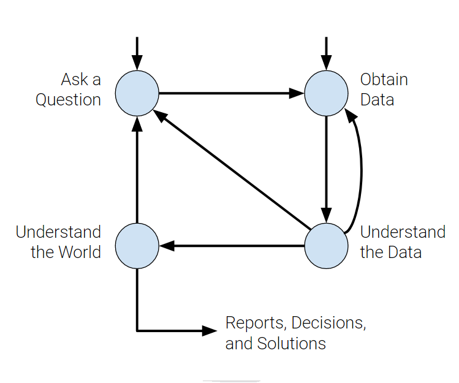
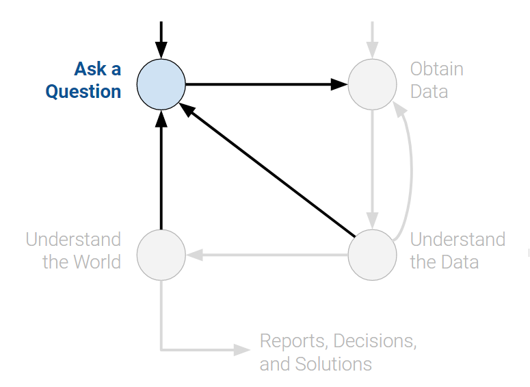
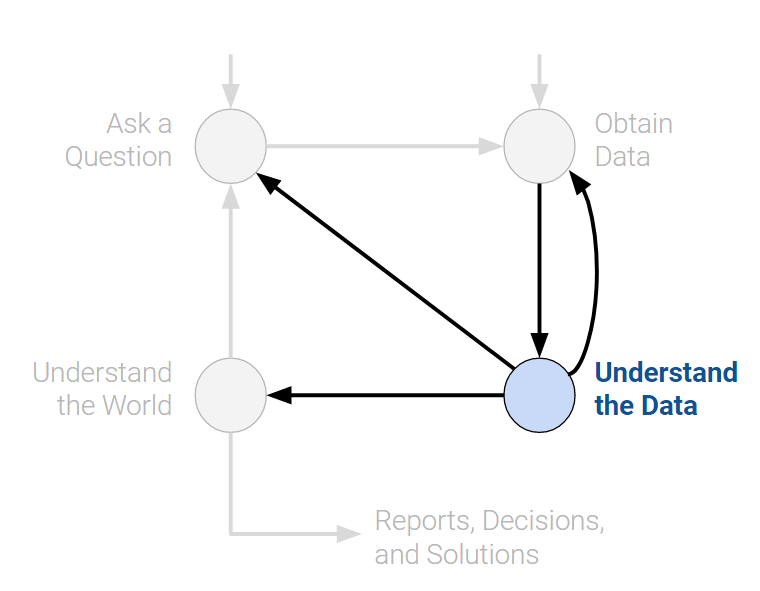

Introduction
The day-to-day work of data scientists is highly variable and can be difficult to fully explain in a single page. However, the higher-level goals of a data scientist can be destilled into 4 steps to aid in better understanding the mission of data scientists.
Data Science Lifecycle
The data science lifecycle is a tool that provides high-level descriptions of the different parts of a data science workflow. There are many variations of this key idea, and this one is read as a flow diagram. Notice that there are two entry points at the top which are equally valid.

Ask a Question
Whether by curiosity or necessity, data scientists will constantly be asking questions. In the world of business, we can be interested in what decisions will result in the highest profits. In medicine, we could ask whether certain patients are likely to benefit from treatment. This is one of the ways the data science life cycle beings. Before proceeding past this phase, it helps to fully define the question. Some questions to ask are:
- What do we want to know?
- A question that is too ambiguous may lead to confusion.
- What problems are we trying to solve?
- The goal of asking a question should be clear in order to justify your efforts to stakeholders.
- What are the hypotheses we want to test?
- This gives a clear perspective from which to analyze final results.
- What are the metrics for our success?
- This gives a clear point to know when to finish the project.

Obtain Data
No data science project can start without the actual data. We can either start with data we have readily avaliable or collect specific data in order to answer a question we have. When collecting data, its crucial to ask the following:
- What data do we have and what data do we need?
- Define the units of the data (people, cities, points in time, etc.) and what features to measure.
- How will we sample more data?
- Scrape the web, collect manually, etc.
- Is our data representative of the population we want to study?
- If our data is not representative of our population of interest, then we can come to incorrect conclusions.
Key procedures: data acquisition, data cleaning

Understand the Data
Raw data itself is not inherently useful. It’s impossible to know everything about a set of data without actually taking the time to analyze it. Here, we turn raw data into insights. Here are some helpful questions to ask yourself throughout this phase:
- How is our data organized and what does it contain?
- Knowing what the data says about the world helps us better understand the world.
- Do we have relevant data?
- If the data we have collected is not useful to the question at hand, then we must collected more data.
- What are the biases, anomalies, or other issues with the data?
- These can lead to many false conclusions if ignored, so data scientists must always be aware of these issues.
- How do we transform the data to enable effective analysis?
- Data is not always easy to interpret at first glance, so a data scientist should reveal these hidden insights.
Key procedures: Exploratory data analysis, creating visualizations.

Understand the World
After learning all that we can about the data in a vacuum, we transition to the “so what?” part of the life cycle. Translating from pure data to worldly insights is a key job of a data scientist. Some important questions to ask are:
- What does the data say about the world?
- Given our models, the data will lead us to certain conclusions about the real world.
- Given our models, the data will lead us to certain conclusions about the real world.
- Does it answer our questions or accurately solve the problem?
- If our model and data can not accomplish our goals, then we must reform our question, model, or both.
- If our model and data can not accomplish our goals, then we must reform our question, model, or both.
- How robust are our conclusions and can we trust the predictions?
- Inaccurate models can lead to untrue conclusions.
Key procedures: Building and tuning models, conducting inference, creating predictions.

Conclusion
The data science life cycle is meant more as a set of guidelines rather than hard rules. The details of each step will be fleshed out in future sections. Hopefully this provided a clearer picture as to what a data scientist’s job looks like!